七、文件和数据格式化
1、文件的使用
1.1 文件的类型
1.1.1 文件定义
- 文件：文件是数据的抽象和集合
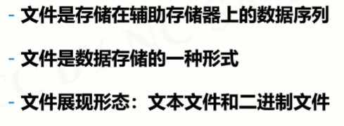
1.1.2 文本文件和二进制文件区别
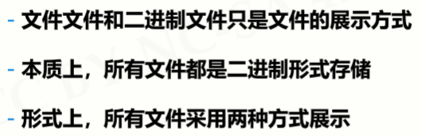
文本文件：
打开方式：
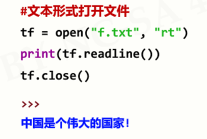
二进制文件：
打开方式：
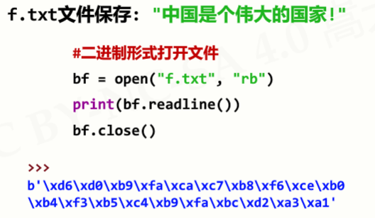
1.2 文件的打开和关闭
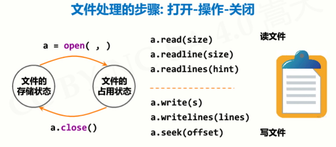
1.2.1 文件的打开
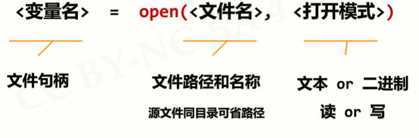
文件路径
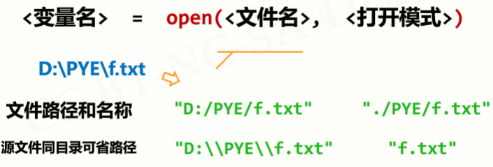
打开模式：
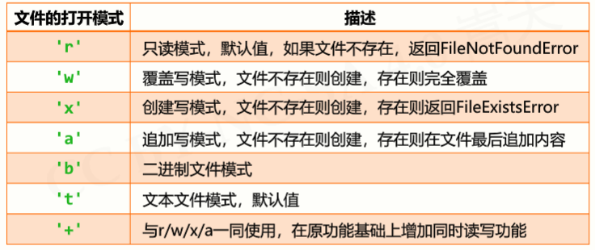
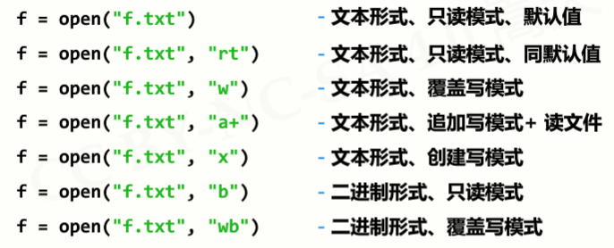
1.2.2 文件的关闭
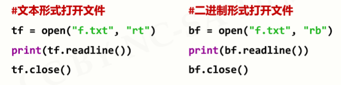
1.3 文件内容的读取
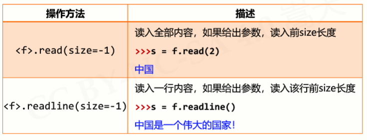
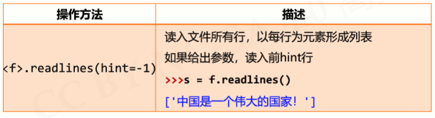
- 文件的全文本操作：遍历全文本
方法一：
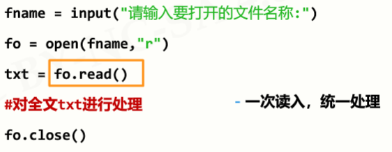
方法二：
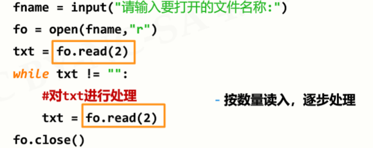
- 文件的逐行操作：逐行遍历文件
方法一：
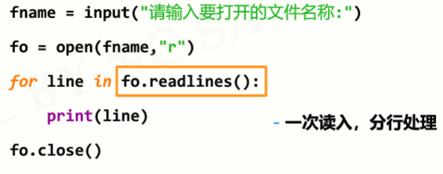
方法二：
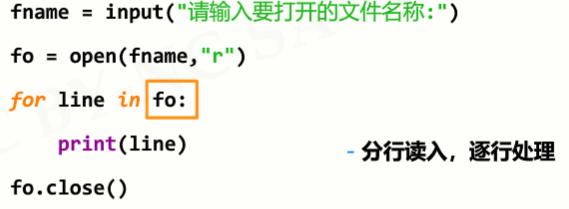
1.4 数据的文件写入
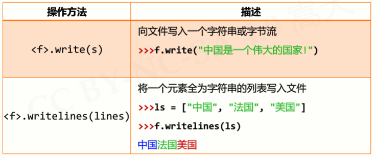
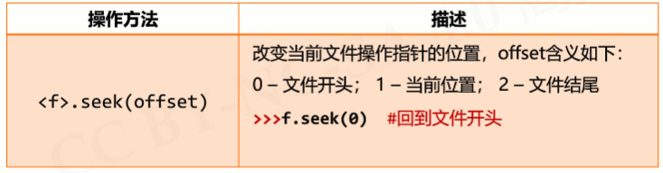
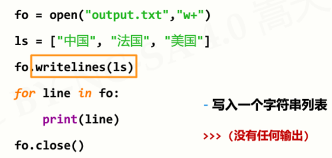
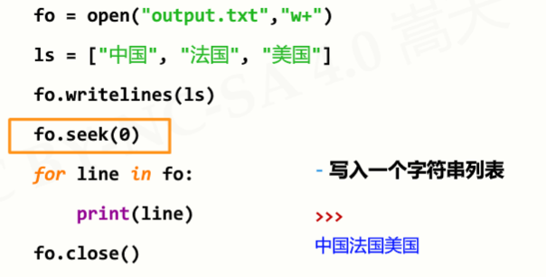
2、一维数据的格式化和处理
2.1 数据组织的维度
- 维度：一组数据的组织形式
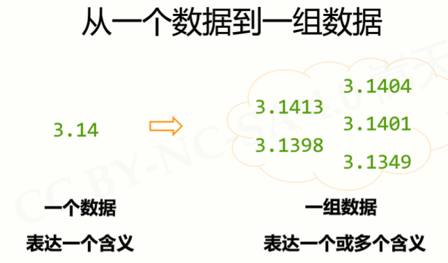
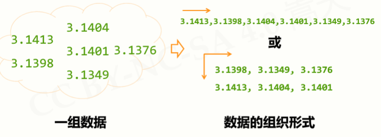
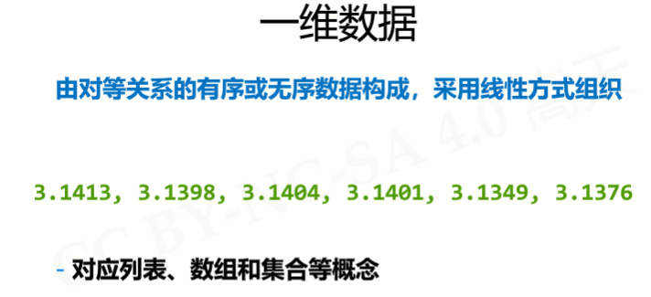
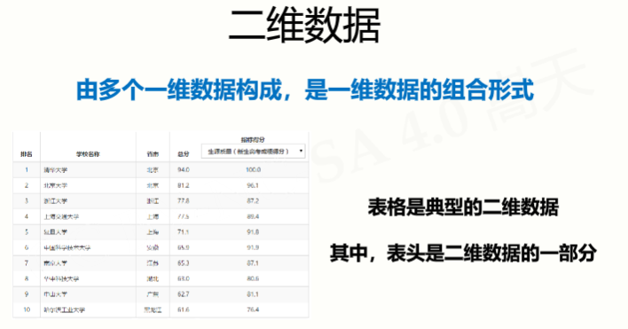
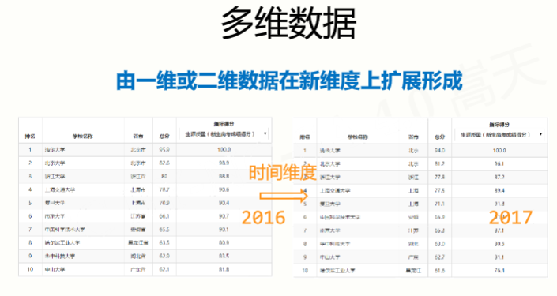
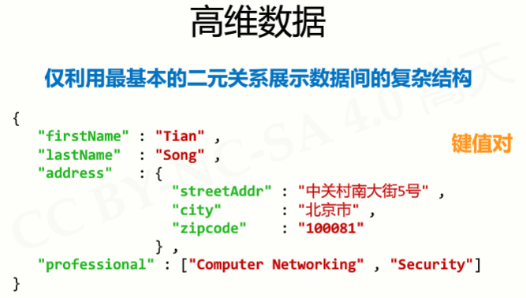
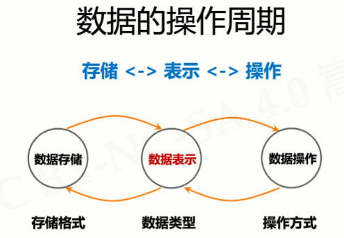
2.2 一维数据的表示
2.2.1 如果数据间有序：使用列表类型
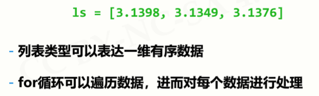
2.2.2 如果数据间无序：使用集合类型
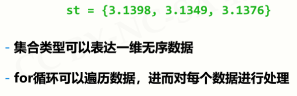
2.3 一维数据的存储
2.3.1 存储方式一：空格分隔
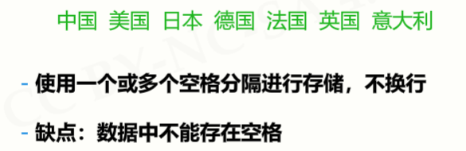
2.3.2 存储方式一：逗号分隔
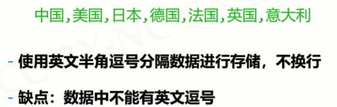
2.3.3 存储方式三：其他方式
2.4 一维数据的处理
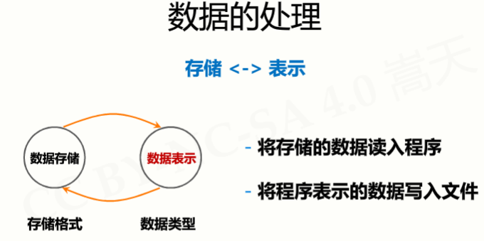
2.4.1 一维数据的读入处理
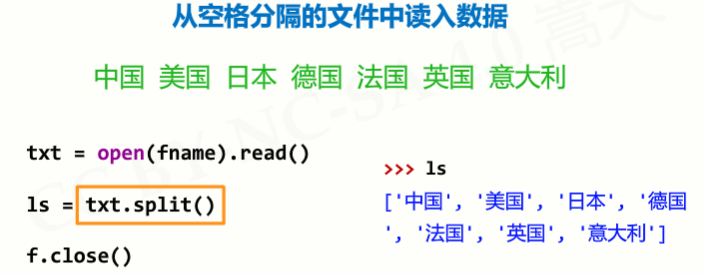
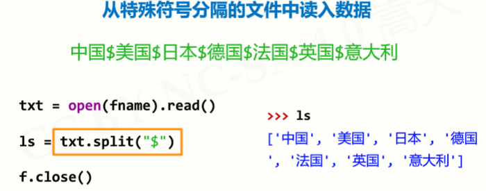
2.4.2 一维数据的写入处理
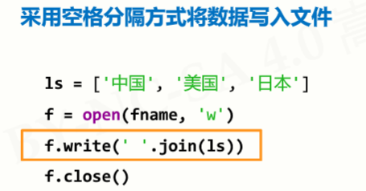
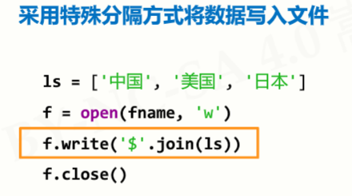
3、二维数据的格式化和处理
3.1 二维数据的表示
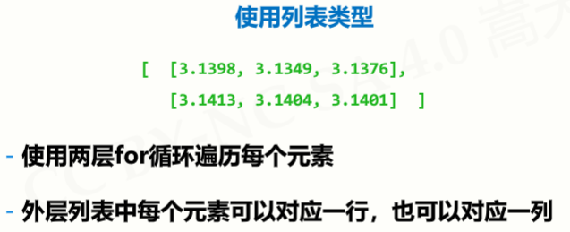
3.2 CSV数据存储格式
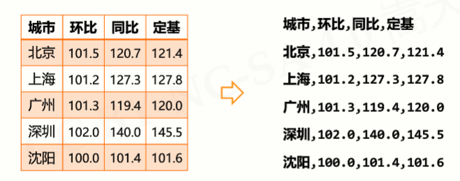
3.3 二维数据的存储
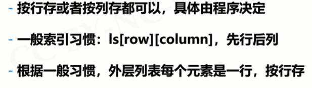
3.4 二维数据的处理
3.4.1 二维数据的读入处理
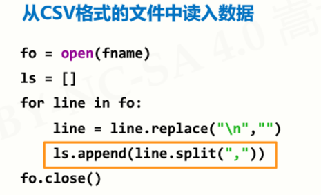
3.4.2 二维数据的写入处理
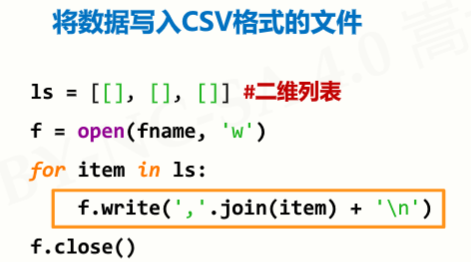
3.4.3 二维数据的逐一处理：采用二层循环
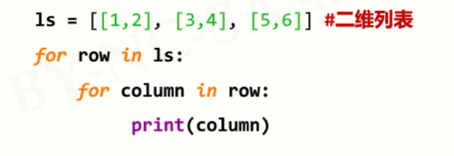
4、wordcloud库的使用
4.1 概述
4.2 基本使用
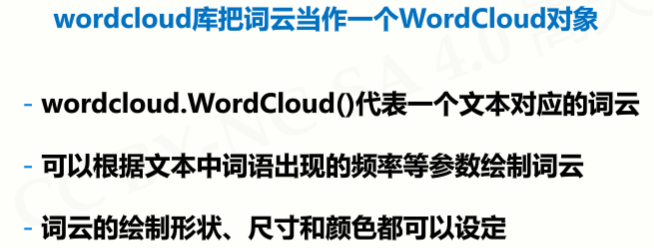
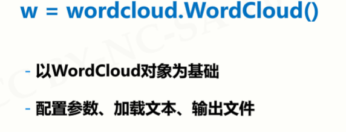
4.3 方法和参数
4.3.1 方法
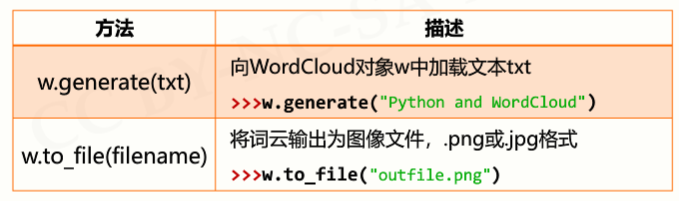
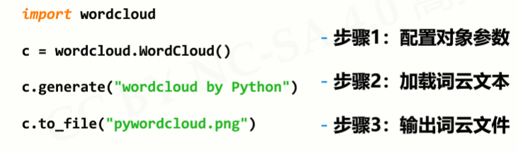
4.3.2 参数
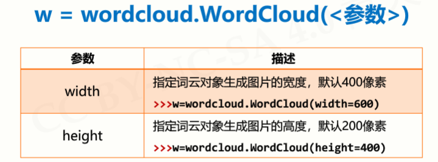
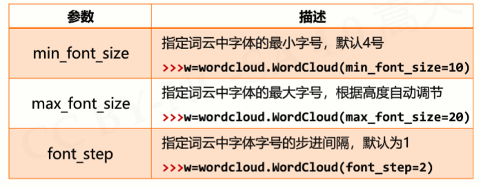
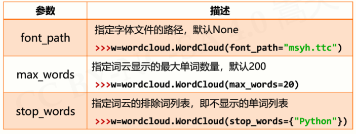
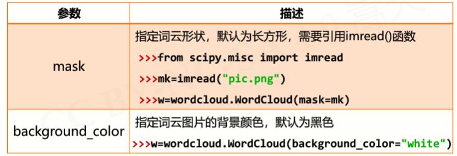
4.4 应用实例
5、实例1：自动轨迹绘制
5.1 问题分析
5.2 基本思路
5.2.1 数据接口定义
5.3 代码：
数据文件
6、实例2：政府工作报告词云
6.1 基本思路
6.2 规则词云代码：
运行结果：
不规则词云代码：
#GovRptWordCloudv2.py
import jieba
import wordcloud
from scipy.misc import imread
mask = imread("chinamap.jpg")
excludes = { }
f = open("新时代中国特色社会主义.txt", "r", encoding="utf-8")
t = f.read()
f.close()
ls = jieba.lcut(t)
txt = " ".join(ls)
w = wordcloud.WordCloud(\
width = 1000, height = 700,\
background_color = "white",
font_path = "msyh.ttc", mask = mask
)
w.generate(txt)
w.to_file("grwordcloudm.png")